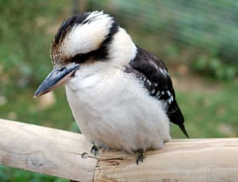
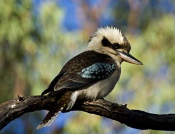

Jägerlieste sind die größten Vertreter in der Familie der Eisvögel und die bekanntesten in der Gattung der Jägerlieste (Dacelo). Das Hauptverbreitungsgebiet liegt im Osten und Südosten von Australien. Im Norden und im Nordwesten von Australien kommen die nahe verwandten Haubenlieste (Dacelo leachii) vor und besetzen ähnliche Habitate wie die Jägerlieste. In Westaustralien, Tasmanien und Neuguinea wurden sie wegen ihrer Nützlichkeit eingeführt. An einen spezifischen Lebensraum sind sie nicht gebunden, sie werden jedoch häufig in der Nähe von Gewässern gesichtet. Bewohnt werden einzeln, paarweise oder in kleinen Familienverbänden Parks und Gärten in den Städten, Wälder oder baumreiche Gebiete.
 15.11.2011